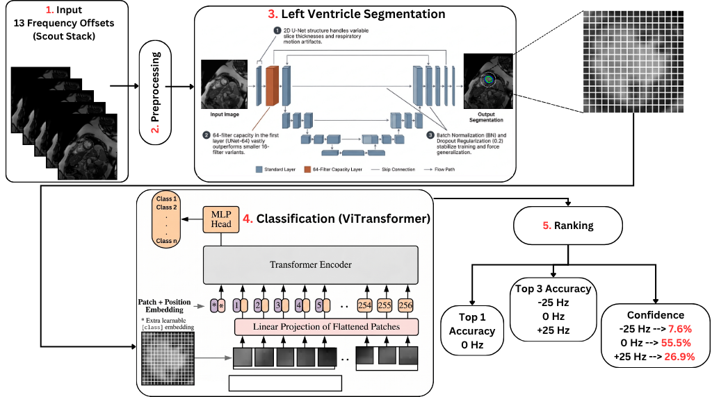

Overview
My research sits at the intersection of deep learning and medical image analysis. I work on segmentation and prediction tasks in cardiac MRI, where scans are noisy, annotated data is scarce, and any method that hopes to be used has to run inside a clinical workflow rather than a benchmark.
Most of my work is done at the Deep Learning Lab at NUST, supervised by Dr. Faisal Shafait and Dr. Momina Moetesum, in collaboration with cardiovascular MRI clinicians.
Automated Frequency Offset Selection for 3T Cardiac bSSFP MRI
Balanced SSFP imaging at 3T suffers from banding artifacts whose position depends on the frequency offset chosen at the scanner. Today a radiographer finds that offset by acquiring scout images and inspecting them by hand. This project asks whether the choice can be made automatically.
I built a pipeline that first locates the left ventricle in low-quality scout images, using the UK Biobank and ACDC datasets for transfer learning and reaching 81.7% IoU. A vision transformer then predicts the appropriate offset from the localized region, achieving 80.8% Top-1 and 88.5% Top-3 accuracy on a 26-patient clinical dataset under leave-one-out cross-validation.
I compared the approach against CNN, Bi-LSTM, Fourier-based, and foundation-model baselines, and measured what deployment would actually cost: 34.9 seconds per study on CPU alone, with no GPU required at the scanner.

2D vs. 3D Architectures for Left Ventricle Segmentation
Cardiac MRI volumes are anisotropic: in-plane resolution is far finer than slice thickness. 3D models are the intuitive choice for volumetric data, but it is not obvious that they should win when a third of the signal is missing.
I built a shared preprocessing and training pipeline for the EMIDEC dataset and evaluated five segmentation architectures in both 2D and 3D settings, comparing them on segmentation accuracy, boundary error, volume difference, computational cost, and model size. SegResNet2D reached a Dice score of 0.929 and an HD95 of 0.67 mm, holding its own against the 3D variants at a fraction of the cost.
The work analyses when each family is the right choice under different acquisition settings
Earlier Work
At the Optical Networks and Technologies Lab at NUST, I worked on time-series forecasting for networking and communication systems. I taught myself recurrent architectures from scratch and built and compared RNN, LSTM, and GRU models against attention-based and generative approaches.
Publications
Comparing 2D and 3D CNN Architectures for Left Ventricle Segmentation in Cardiac Magnetic Resonance Imaging
Muhammad Moiz, Abdul Rehman, Abdul Rehman, Muhammad Usman, Momina Moetesum, Faisal Shafait